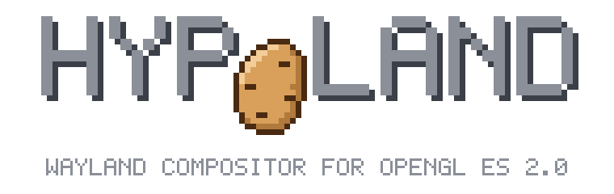

hypoland.org

Hyprland for GPUs that stop at OpenGL ES 2.0.
Hypoland is a fork of the Hyprland tiling Wayland compositor with a renderer rewritten for
GLES 2.0. It runs a complete desktop on a 2008 ThinkPad X200 at 60 fps, and your
Hyprland config, hyprctl and scripts keep working.
tty1: ThinkPad X200 console
Omarchy 7.2.5-4-omarchy (tty1) $ Hyprland eglCreateContext failed with both GLES 3.2 and GLES 3.0 Hyprland received signal 6(ABRT) Have you tried asking Hyprland politely not to crash? $ Hypoland Using: OpenGL ES 2.0 Mesa 26.2.3 # bar, wallpaper, notifications, windows, # Xwayland. At 60 fps.
why: the short version
Hyprland needs OpenGL ES 3.0. Plenty of laptops that still work fine top out at GLES 2.0, and on them Hyprland does not start at all.
Hypoland keeps the compositor and replaces what the GPU can't do: the renderer and all shaders are GLES 2.0 / GLSL ES 1.00, and the GPU-heavy extras are either gone or off by default. aquamarine, Hyprland's rendering backend library, is modified the same way so that it runs on GLES 2.0, and ships built into Hypoland.
The name: hypo- means "under". The O in the logo is a potato, hanging below the line.
btop: ThinkPad X200, Core 2 Duo, GMA 4500MHD, 1280x800
glmark2-es2-wayland scoreMeasured on the test machine running the full Omarchy session (Quickshell bar, wallpaper, notifications). Stock Hyprland 0.56.2 aborts at startup on the same machine. Hypoland's own optimizations for this hardware include drawing straight into the scanout buffer, clearing only damaged areas and double-buffered shm uploads.
lspci: target hardware
- Intel GMA 4500MHD / GM45 (Gen4.5), the tested target
- Intel GMA X3100 / 965GM (Gen4)
- Other GPUs with OpenGL ES 2.0 under Mesa should work, but are untested
Developed on a ThinkPad X200 with Mesa's crocus driver.
removed
- Color management and HDR
- Motion blur
- Blur variants other than dual Kawase
- Plugins and
hyprpm - Logo background and splash
Their config options stay registered and are ignored, so your config loads without errors.
changed defaults
- Blur, shadows and animations are off, turn them on if you like
- XCursor themes instead of hyprcursor
quirks:skip_non_kms_dmabuf_formatsis off, so transparent clients work on Gen4
compat: a drop-in replacement
| What | In Hypoland | |
|---|---|---|
| Config | ~/.config/hypr/hyprland.lua, same options | same |
| IPC | hyprctl, sockets, command names, JSON output, events | same |
| Desktop name | XDG_CURRENT_DESKTOP=Hyprland, so the portal and apps detect it | same |
| Protocols | The Hyprland Wayland protocols (Quickshell, portals, global shortcuts) | same |
| Binary | Hypoland, with Hyprland and hyprland as symlinks | works |
| Screen shaders | Must be GLSL ES 1.00, Hyprland's GLSL ES 3.00 shaders do not compile | differs |
| Plugins | Not supported, hl.plugin.load() warns and does nothing | removed |
foot: ~/src
# same dependencies as Hyprland, but aquamarine # is embedded and udis86 is not needed $ git clone https://github.com/hegjon/Hypoland $ cd Hypoland $ cmake -S . -B build -DCMAKE_BUILD_TYPE=Release $ cmake --build build -j$(nproc) # or, on Arch: a package that replaces hyprland $ cd packaging/arch && makepkg -f
README: building
See the Hyprland wiki for the dependency list. Hypoland builds aquamarine from its own tree, patched for GLES 2.0, and never uses the system one.
Build on a fast machine and copy the result over? Target baseline x86-64. Do not use
-march=native, your desktop CPU knows instructions a Core 2 Duo doesn't.
The Arch package provides and conflicts with hyprland, and
ships its own hyprctl so the versions match.
man hypoland: questions
Will it run on my GPU?
If Hyprland dies with eglCreateContext failed and eglinfo shows
OpenGL ES 2.0 but no 3.0, Hypoland is meant for you. Gen4 Intel is tested; anything else is
untested, and reports are welcome.
I have a modern GPU. Should I use it?
No, use Hyprland. It has color management, HDR, plugins and more effects. Hypoland only exists because those machines can't run it.
Does Omarchy work?
Yes. Omarchy 4 is what the test machine runs: the Quickshell bar, notifications, wallpaper, windows and Xwayland all work. Chromium runs, but falls back to software rendering because it wants GLES 3 itself.
Can I keep blur?
Yes, dual Kawase blur is kept and costs about 1% CPU on the X200. It is off by default, turn it on in your config. The same goes for shadows, rounding and animations.
Is this an official Hyprland project?
No. Hypoland is an independent fork, not affiliated with or endorsed by Hyprland or its developers. All credit for the compositor goes to Hyprland and its contributors.